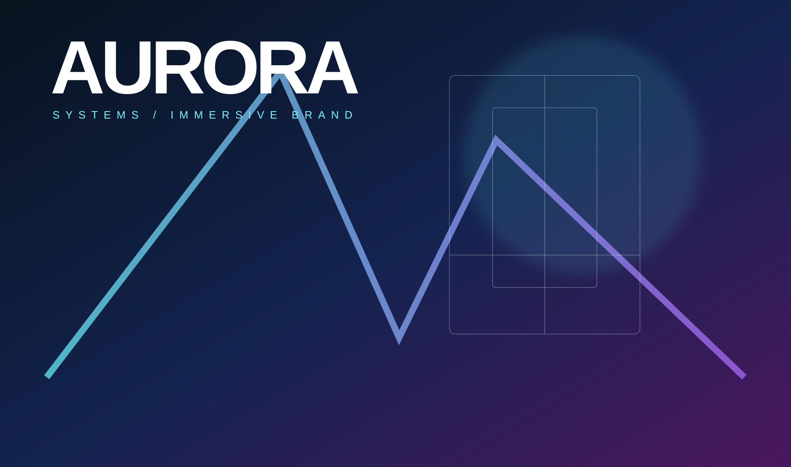
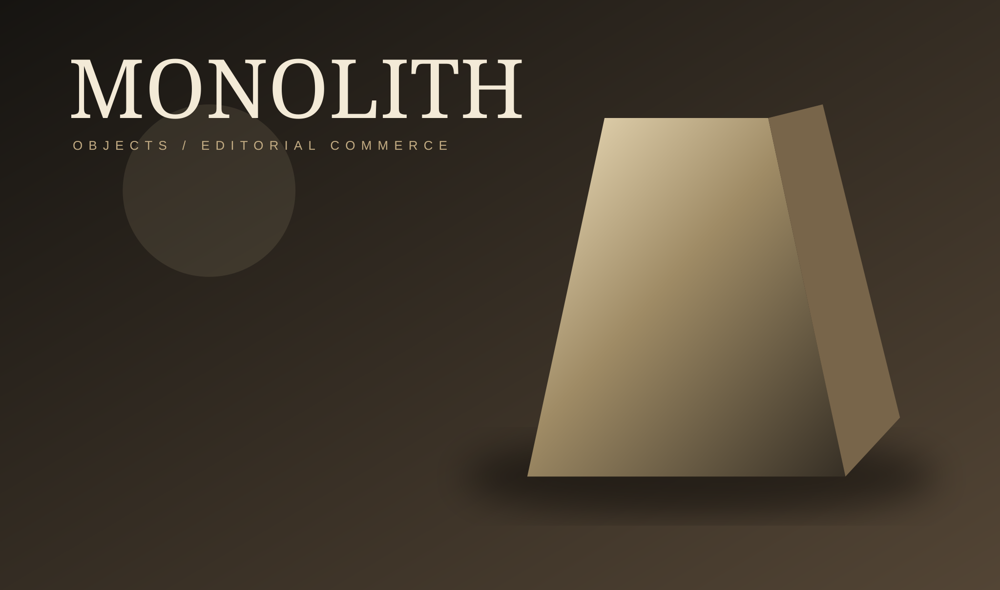
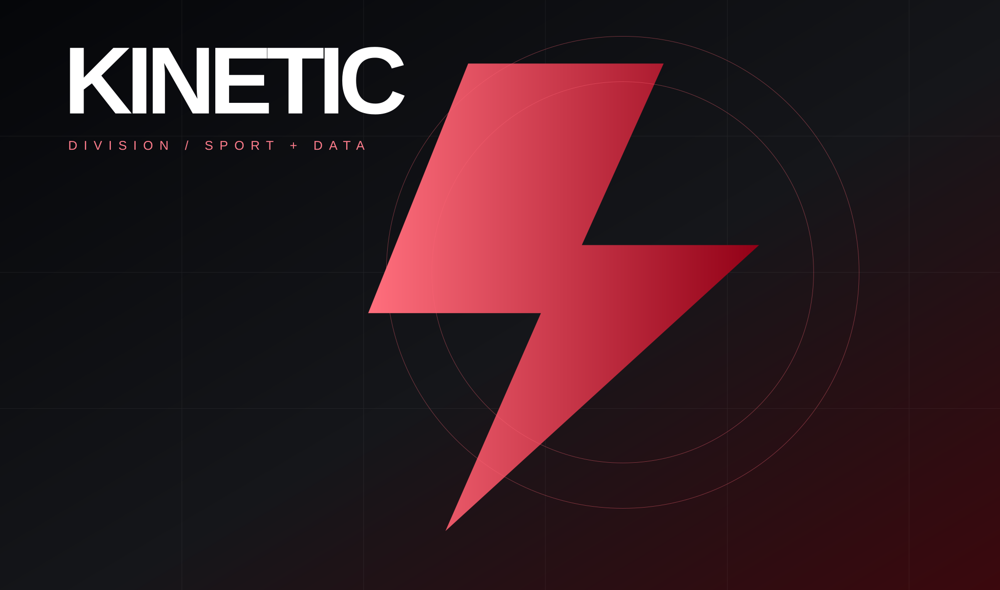

01
Spatial interfaces
Depth, parallax, layered translucency and perspective without relying on heavyweight 3D libraries.
A one-page interview piece built to show range: cinematic art direction, interactive systems, responsive engineering, accessibility, performance, and motion that actually serves the experience.
The best experiences are not about throwing effects at a page. They are about orchestrating attention. Every interaction below has a purpose: orientation, hierarchy, feedback, delight or proof of craft.
Depth, parallax, layered translucency and perspective without relying on heavyweight 3D libraries.
Scroll reveals, kinetic typography and microinteractions tuned to feel deliberate rather than decorative.
Keyboard shortcuts, command palettes, focus states and responsive controls make websites feel genuinely interactive.
No framework dependency. Motion pauses where appropriate and respects reduced-motion preferences automatically.
Move your pointer. Tilt the cards. Open the command palette. Toggle the signal field. Every element is custom-built with the platform itself.
Each concept below is fictitious and exists only to demonstrate art direction, layout systems and interaction patterns.

Editorial type, depth, glow and a responsive visual system designed to feel simultaneously technical and luxurious.

A deliberately restrained visual system proving the same codebase can move from maximal to minimal without losing polish.

Dense data hierarchy, motion cues and sharp compositional rhythm built for high-frequency information environments.
// Respect the human before the effect.
const motion = matchMedia('(prefers-reduced-motion: reduce)');
if (!motion.matches) {
experience.enableDepth();
experience.enableKinetics();
}
// Progressive enhancement, never dependency.
experience.enhance({
keyboard: true,
pointer: true,
touch: true
});Visible focus, semantic structure, skip link, dialog handling and reduced-motion support.
SVG visuals, native APIs and deferred interaction logic keep the experience portable.
Typography, spacing, controls and interaction density adapt continuously with the viewport.
These are live interface diagnostics, not business claims.
No résumé theatre. No borrowed template. Just the work, running in the browser.